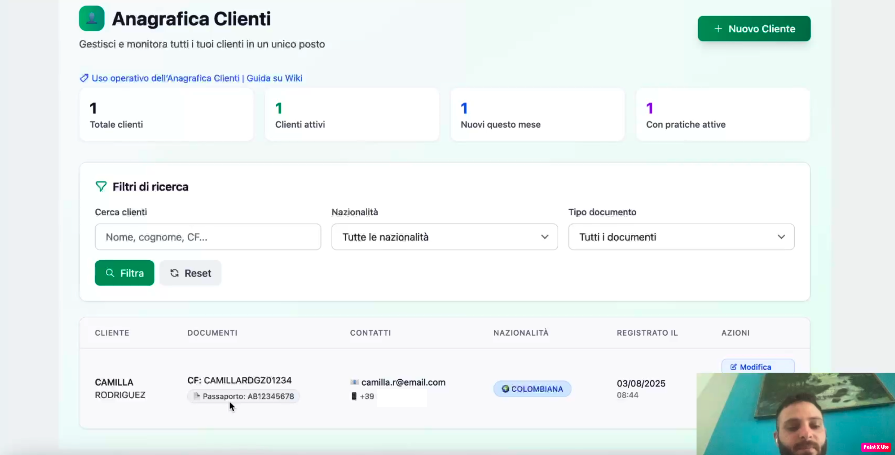

Anagrafica Clienti in PraticaFlow: ordine e velocità

L’anagrafica clienti è il cuore di ogni studio o agenzia. In PraticaFlow è stata progettata per essere veloce, ordinata e completa. Tutto quello che ti serve su un cliente è in un’unica scheda, collegato alle pratiche e ai documenti.
Addio a file Excel infiniti e cartelle disordinate: ora basta una ricerca per avere subito ciò che ti serve.
Funzionalità principali
- Schede complete: dati anagrafici, recapiti, note, scadenze.
- Ricerca istantanea: trova clienti con nome, codice fiscale o telefono.
- Collegamenti intelligenti: accedi subito alle pratiche e ai documenti legati.
- Gestione internazionale: supporto a nazionalità, prefissi e residenze diverse.
Come velocizza il lavoro
Con un click puoi passare dall’anagrafica cliente al riepilogo pratiche, ai documenti associati, fino agli appuntamenti e ai pagamenti. Non perdi più tempo a cercare nelle cartelle.